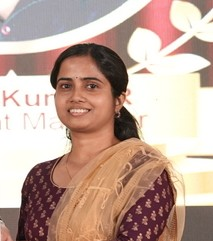

Vinitha V
3/134, Pallathampully, Tattamangalam-PO, Palakkad-678102
Contact me
vindel1501@gmail.com
9035734431
Summary
Passionate about web development with a strong foundation in Python and network automation.
Seeking a Web Developer role to leverage my technical expertise and personal projects in delivering high-quality web solutions.
Education
Work Experience
- AT&T
May 26 2014 till 31 March 2016
Began my career in the IT industry as a Technical Support Engineer.
Provided technical support for enterprise clients, troubleshooting network and system-related issues.
- IBM(Acquisition from AT&T. Later moved to Kyndryl post-aquisition)
Moved to IBM on 1st April 2014 as part of aquisition
Later transferred to Kyndryl Solutions private Limited (“Kyndryl”) on 01/09/2021, with full continuity of service,
pursuant to a global restructuring of IBM’s Managed Infrastructure Service business to Kyndryl.
- Gained exposure to diverse roles in IBM including Oracle Functional consultant, Change management, Incident Management, Inventory management roles and Python developer
- Acquired 4 years of hands-on experience as a Python Developer, specializing in automating network processes and workflows to enhance operational efficiency.
- Played a key role in developing scalable Python-based solutions for network automation projects.
- Contributed as a core member of the Network Automation team,
specializing in developing and deploying Python-based automation solutions to streamline network operations.
- Provided end-to-end support for automation tools, including requirements gathering, development, testing, deployment, and post-deployment maintenance.
- Automated routine network tasks such as device configuration, monitoring, and reporting, reducing manual efforts and minimizing errors.
- Designed and implemented scalable APIs and scripts for seamless integration with network infrastructure and third-party tools.
Additional Experience
- Out of personal interest, began learning web development and have completed several small projects to gain hands-on experience.
- Gained proficiency in front-end and back-end technologies, including HTML, CSS, JavaScript, and Python-based frameworks like Flask/Django.
- Looking forward to transitioning into a web development role to further enhance my skills and contribute to impactful web-based projects.
Skills
Technical Skills
- Programming Languages: Python (4+ years), HTML, CSS, JavaScript
- Automation Tools: Python-based scripting for network automation, API integration, and workflow optimization
- Frameworks & Libraries: Flask, Django, Pandas, Requests, Jinja2
- Networking: Network automation, device configuration, monitoring, and troubleshooting
- ITIL Processes: Change Management, Incident Management, Inventory Management
- Version Control: Git, GitHub
- Web Development: Front-end and back-end development using Flask/Django, responsive design principles, RESTful API development
- Database Management: MySQL, SQLite, Oracle databases
- Problem-Solving & Debugging: Root cause analysis, bug fixes, performance optimization
- Documentation: Process workflows, usage guides, troubleshooting manuals
Soft Skills
- Strong collaboration with cross-functional teams
- Excellent time management and multitasking abilities
- Adaptability to learn new technologies and frameworks
Hobbies